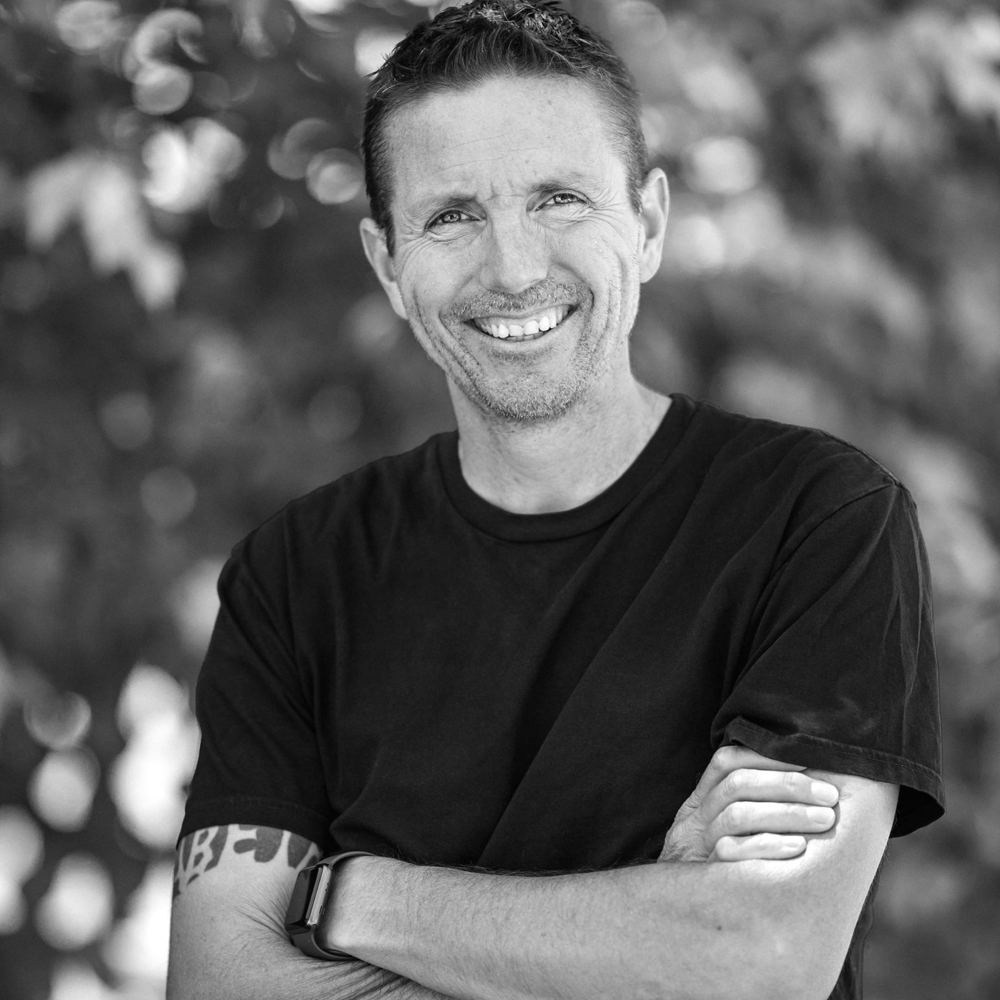

Co-owner of Kate & Keith Photography, catering to small weddings of adventurous couples around the country and globe. Co-founder/ executive director of Sustainable Seacoast, a regional nonprofit with the primary goal of eliminating single-use plastic from the local restaurant industry. I’ve enjoyed learning coding on my own since I built my first website in 2004 with FrontPage using tables for my layout #cringe. From owning a residential masonry company to being a multi-hat wearing director of marketing at a large road race event company, I’ve found the excitement and challenge of creative problem solving has always been my biggest motivator. So, when presented with the opportunity to embark on a formalized Full-Stack web development education, I jumped at the chance.
